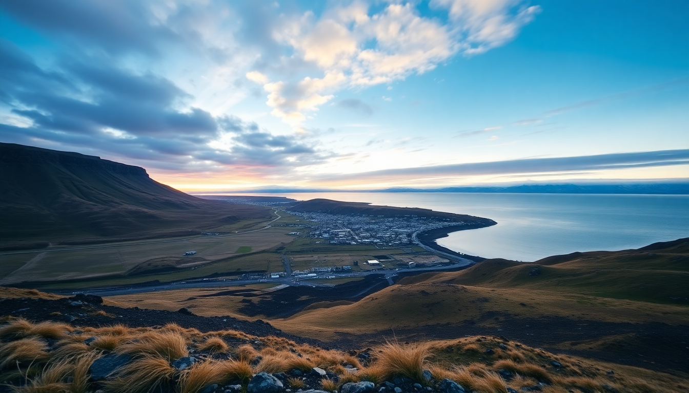

10-Day Iceland Itinerary: Reykjavik, Golden Circle & South Coast

We landed at Keflavik on a Tuesday morning, grabbed our rental from Blue Car Rental, and spent the next ten days looping Iceland’s south coast. This itinerary skips the tourist buses and gives you a real feel for the country: geothermal pools, black sand beaches, and waterfalls you can walk behind. You’ll need a 4x4 for the gravel roads, and you’ll want to book accommodation early—especially in Vik and around the Golden Circle. Here’s exactly how we did it.
Is 10 days enough for Iceland’s south coast?
Yes, but only if you stick to the southern ring road and skip the Westfjords. We covered Reykjavik (2 nights), the Golden Circle (1 night), the South Coast to Vik (3 nights), and then drove east to Jökulsárlón glacier lagoon before looping back. Ten days gave us time to hike, soak in hot pots, and not feel rushed. If you try to add Akureyri or the north, you’ll spend half your trip driving.
- Reykjavik: 2 nights to adjust to the time zone and explore the city
- Golden Circle: 1 night near Geysir or Gullfoss
- South Coast: 3 nights based in Vik
- Jökulsárlón: 1 night near the lagoon
- Return to Reykjavik: 2 nights to wrap up
What’s the best way to see the Golden Circle?
Drive it yourself and skip the bus tours. The Golden Circle loop—Þingvellir National Park, Geysir, and Gullfoss—is only about 230 km total, so you can do it in a single day with stops. We left Reykjavik at 8 AM and had Gullfoss to ourselves until 10 AM. By noon, tour buses flooded Geysir. Our advice: start early, hit Gullfoss first, then Geysir, then Þingvellir on the way back.
- Gullfoss: Go before 9 AM for fewer crowds and better light
- Geysir: The main Strokkur eruption happens every 5-10 minutes; skip the paid parking lot and park at the free lot 100 meters down
- Þingvellir: Walk the Almannagjá rift valley—it’s free and takes 45 minutes
- Eat lunch: Fjöruborðið in Stokkseyri for langoustine soup (cash only)
Where should I stay on the South Coast?
Vik is the logical base, but book at least three months ahead—we made that mistake and ended up in a cramped guesthouse. Hotel Katla in Vik is worth the splurge for the hot tubs and breakfast buffet. For a quieter option, Hótel Kría is newer and closer to the black sand beach. If you’re on a budget, Vik Hostel has clean dorms and a shared kitchen.
- Vik: Hotel Katla (mid-range), Hótel Kría (modern), Vik Hostel (budget)
- Alternative: Fosshótel Núpar (30 minutes east of Vik, cheaper, with a restaurant)
- Camping: Vík Camping Ground (basic but cheap, open June–September)
What are the must-see stops between Vik and Jökulsárlón?
The drive from Vik to Jökulsárlón is about 2.5 hours, but we stretched it to a full day. The Reynisfjara black sand beach is right past Vik—watch for sneaker waves. Dyrhólaey viewpoint gives you a cliffside look at the arch and puffins in summer. Fjaðrárgljúfur canyon is a 2 km hike that’s worth the detour. And Svartifoss waterfall in Skaftafell National Park requires a 45-minute uphill walk, but the basalt columns are unlike anything else.
- Reynisfjara: Stay well back from the waves; they’re deadly
- Dyrhólaey: Free parking, puffins from May to August
- Fjaðrárgljúfur: Closed in winter; check road.is for conditions
- Svartifoss: Trail starts at the Skaftafell Visitor Center
- Jökulsárlón: Take the Amphibian Boat Tour (30 minutes, worth it)
Can I add Akureyri to a 10-day itinerary?
Technically yes, but I wouldn’t. Akureyri is a 5-hour drive from Reykjavik (without stops), and you’d need to skip the South Coast or rush it. We did a day trip from Reykjavik to Akureyri via a Domestic flight with Icelandair—it cost about $200 round trip and saved us two days of driving. If you have your heart set on the north, fly in and out of Akureyri, then rent a car for the Mývatn area.
- Flight: Reykjavik to Akureyri, 45 minutes
- Mývatn: Mývatn Nature Baths are less crowded than Blue Lagoon
- Akureyri: Brynja ice cream shop on the main street is legit
- Skip: The Whale Watching tour from Akureyri if you’re short on time—it’s 3 hours and you might see nothing
Is the Blue Lagoon worth the hype?
No. We went on day two and regretted it. The water is nice, but it’s expensive (€60+), crowded, and feels like a theme park. Instead, hit Sky Lagoon in Reykjavik for a similar experience with better design and fewer people. Or drive 20 minutes from Keflavik to Kópavogur’s local geothermal pool—Kópavogslaug costs about $8 and has a steam room.
- Sky Lagoon: Book the 7-step ritual (€70, includes a cold plunge)
- Local pools: Kópavogslaug or Sundhöllin in Reykjavik (under $10)
- Blue Lagoon: Only worth it if you have a layover and want to kill time
What should I pack for an October trip?
October is shoulder season: rain, wind, and temps around 5–10°C. Pack layers and waterproof everything. We used Icewear wool base layers (bought at the Kolaportið flea market) and a North Face shell jacket. Waterproof hiking boots are non-negotiable—I slipped on wet rocks at Skógafoss and soaked my only pair of sneakers.
- Layers: Merino wool base, fleece mid-layer, waterproof shell
- Footwear: Merrell or Salomon waterproof hiking boots
- Accessories: Wool hat, gloves, buff (wind is brutal)
- Gadgets: Trail Wallet app to track spending (Iceland is expensive)
FAQ
Is it safe to drive the ring road in October? Yes, but check road.is daily for closures. We hit ice patches near Vík and had to slow to 40 km/h. Rent a 4x4 with studded tires if you’re driving after October 1. Most rental companies offer them as an add-on for about $50/day.
How much does a 10-day trip to Iceland cost? We spent about $3,500 per person including flights from the US, rental car, accommodation in mid-range guesthouses, and meals. Budget $200–$250 per day for two people if you’re not camping. Groceries at Bónus (the yellow discount supermarket) cut our food costs by half.
Do I need to book tours in advance? For the Golden Circle and South Coast, no—drive yourself. For Jökulsárlón boat tours and ice cave tours (November–March), book at least two weeks ahead. We booked the Ice Cave Tour with Local Guide of Vatnajökull and it sold out a week before.
Conclusion
- Drive the Golden Circle early to avoid crowds; skip the bus tours entirely.
- Base yourself in Vik for the South Coast, and book accommodation months ahead.
- Skip the Blue Lagoon; hit Sky Lagoon or a local pool instead.
- Pack waterproof everything, and check road.is daily in shoulder season.
- Add Akureyri only if you fly—driving eats too much time.